Ross Geller is a paleontologist with a brilliant mind and a hopeless heart. He knows everything about dinosaurs, yet almost nothing about how to handle love. After three divorces and countless romantic missteps, he still believes in connection still tries to love the right way. He’s awkward, over-analytical, and endlessly sincere a walking reminder that even the smartest people can be beautifully flawed.
- 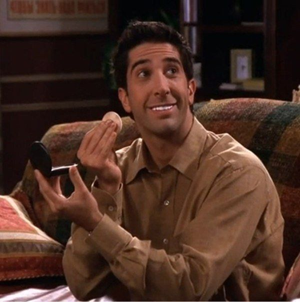
- 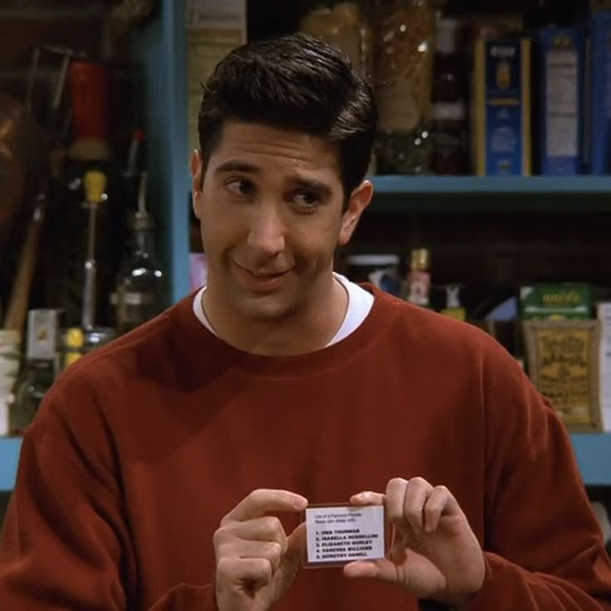
- 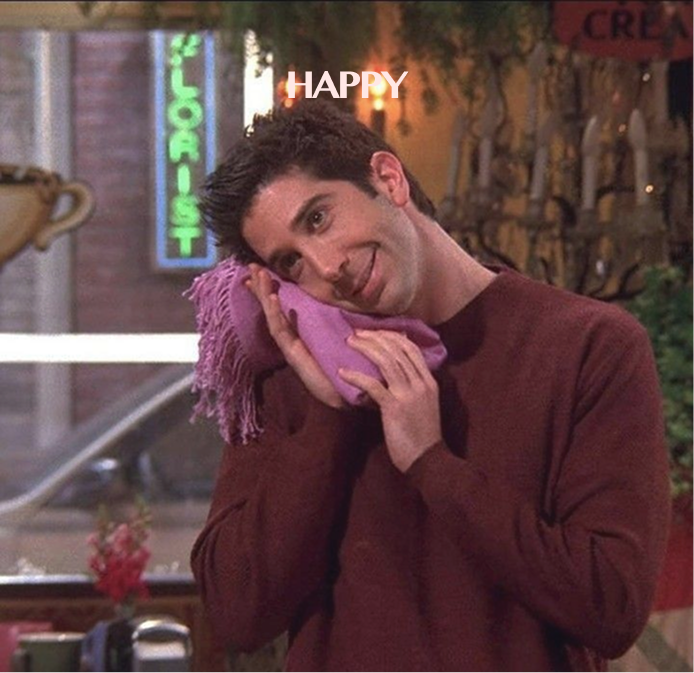
- 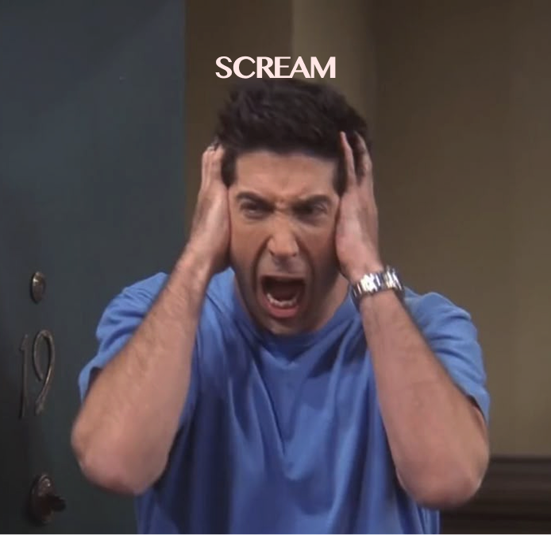

As a paleontologist, Ross studies the remains of the past — yet he’s ironically terrible at letting go of his own. Brilliant in science but disastrous in love, he treats relationships like fossils: carefully analyzed, often broken, and always a little too fragile.
-
Ross lives and breathes dinosaurs. His passion for isn’t just a job — it’s his way of connectiong the past to the present. He can turn any dinner conversation into a lecture on Jurassic life, and somhow, we still love him for it.

-
Three divorces and counting — Ross’s love life is a real fossil record of mistakes and hope. Yet, no matter how many times it crumbles, he never stops believing in love. That’s the true science behind his heart.
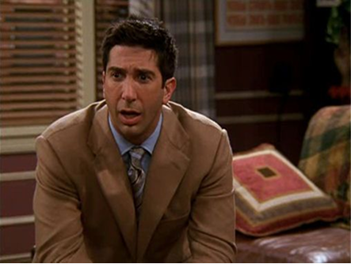 -
Ross is the kind of guy who can turn anything — from dinosaurs to dating — into a full-blown analysis. His need to over-explain, over-think, and over-categorize everything is both his charm and his downfall, making even the simplest moments hilariously complicated
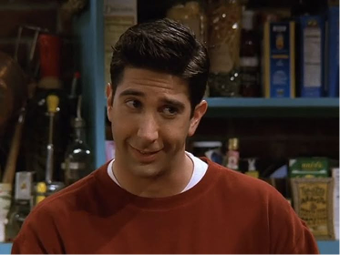


He always tries to sound logical, but somehow ends up talking about feelings. What starts as a talk about dinosaurs inevitably turns into a conversation about love, loss, and maybe a little jealousy. A Ross Geller interview is never just an interview it’s a lecture, a confession, and a comedy all at once.
-
Ross, how would you describe
yourself in one sentence?“I’m Dr. Ross Geller. Not a medical doctor, but still a doctor. People don’t realize how romantic it is to study fossils — I literally dig up the past for a living.”
-
People often call you a ‘dinosaur nerd’.
How do you feel about that?“I prefer the term passionate scientist, not ‘dinosaur nerd’. Dinosaurs hold the key to understanding evolution and human history. Someone has to do it. Unfortunately, most of my dates don’t find that very exciting.”
-
Your love life is… quite eventful,
isn’t it?“Yes, I’ve been divorced three times. Three. But every relationship teaches you something, right? I still believe in love — I’m just taking a short break from wedding venues.”
-
Can you finally explain what you meant
by “We were on a break”?“It was a break. Literally! People always misunderstand that. But I’ve learned to accept that it’s become my lifelong meme now.”
- 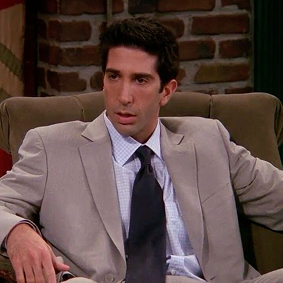
- 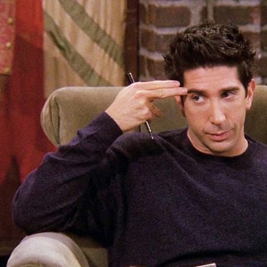
- 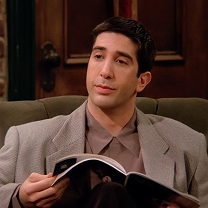
- 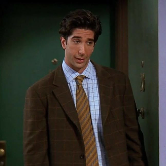
-
Who’s the cleanest among your friends?
“That’s definitely Monica. Her cleaning skills are practically industrial-grade. It’s impressive… and also terrifying when she notices a cup that’s two centimeters out of place.”
-
If you were to analyze Joey’s “How you
doin’?” scientifically, what would you say?“From a social psychology standpoint, it’s a highly efficient phrase — short, encourages eye contact, and triggers instant positive response. When I tried it, though… let’s just say the reaction wasn’t quite the same.”
-
Lastly, what’s your rule for life?
“Life is complicated, but science usually has the answer. And sometimes, it just helps to blame the dinosaurs.”
Ross's
Dating History Timeline
-
Divorce 1 - Carol
Ross’s first marriage ended not with a fight, but with a revelation—Carol realized she was gay. For Ross, the news was heartbreaking and confusing, shaking the foundation of what he believed marriage to be. Yet out of the emotional chaos came one of the greatest joys of his life: his son, Ben. This chapter taught Ross that love can change shape, relationships can transform, and sometimes heartbreak leads to unexpected new beginnings.
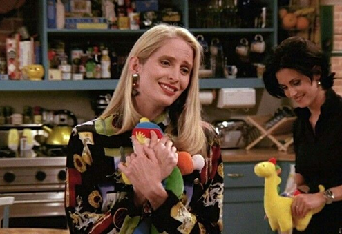 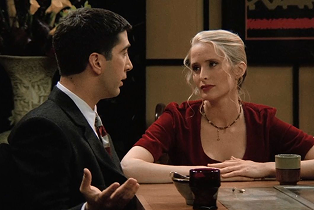 -
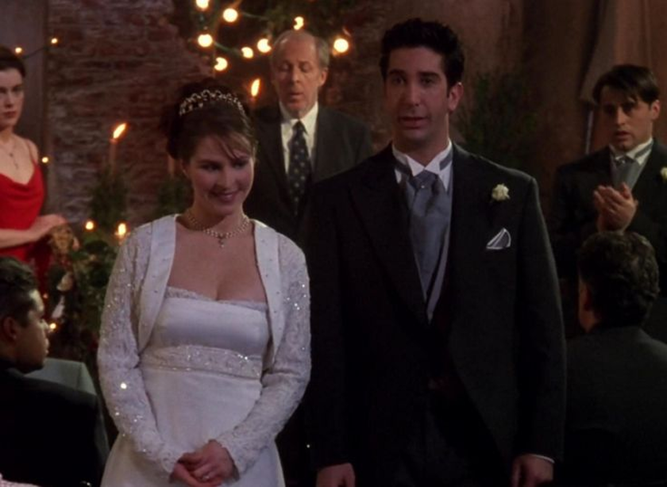

Divorce 2 — Emily
Ross’s second marriage collapsed in the most dramatic and unforgettable way—his accidental vow slip, “I, Ross… take thee Rachel.” That single moment became one of the most legendary disasters in wedding history. Emily never recovered from the hurt, and Ross never fully escaped the fallout. Their marriage dissolved quickly, proving once again that Ross’s heart and his mouth are often not on the same page.
-
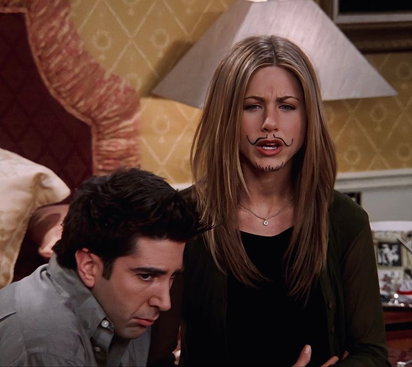 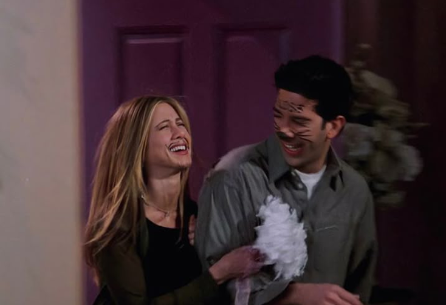
Divorce 3 — Rachel
Ross and Rachel’s Las Vegas marriage wasn’t exactly planned—it was fueled by alcohol, chaos, and years of unresolved tension. They woke up the next morning with marker on their faces, matching rings on their fingers, and absolutely no idea what they had done. Although they rushed to get it annulled, the impulsive marriage became one of the most iconic moments of their on-and-off relationship. It wasn’t real in the traditional sense, but it was undeniably, perfectly “Ross and Rachel.”
If Ross’s life could be summed up in one line, it would be this ‘We were on a break!’ A man caught between love and logic, who turned a simple misunderstanding into one of the greatest debates in TV history. For him, it wasn’t just an excuse — it was a scientifically valid statement.
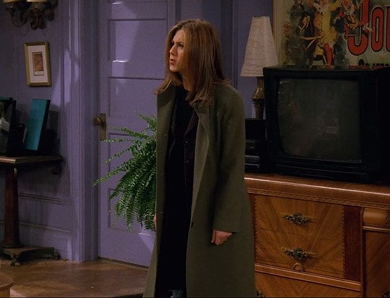 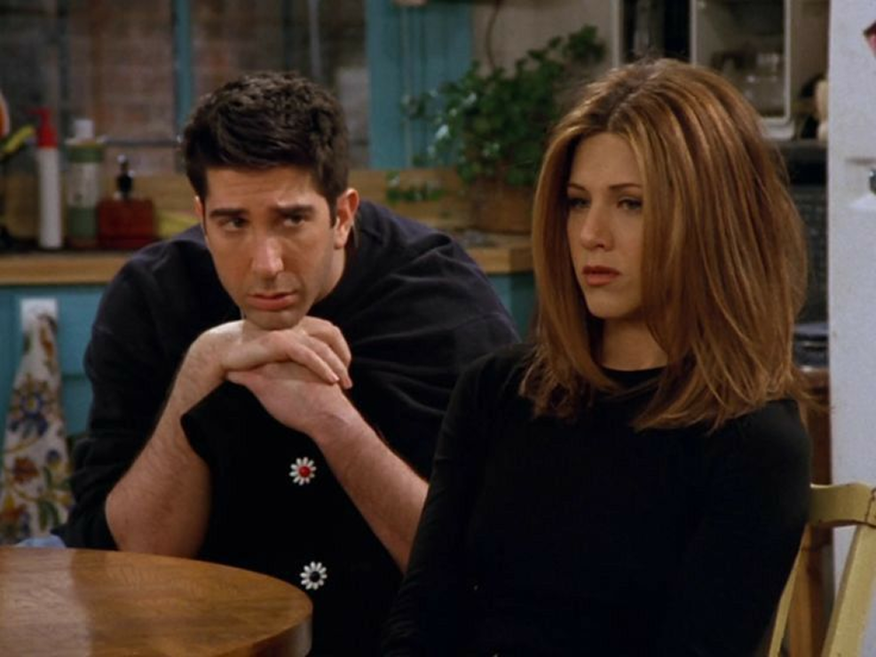We were
on a
break!
-
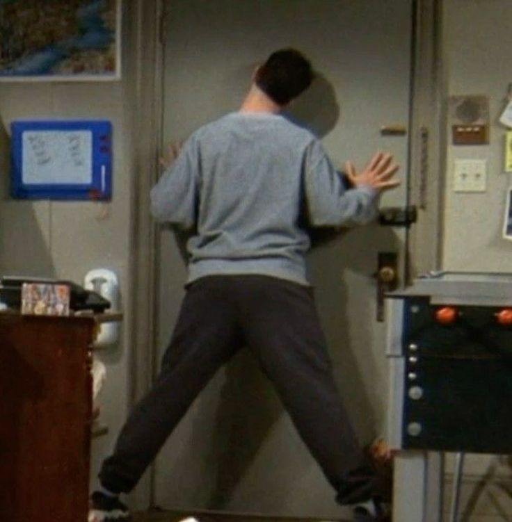

-
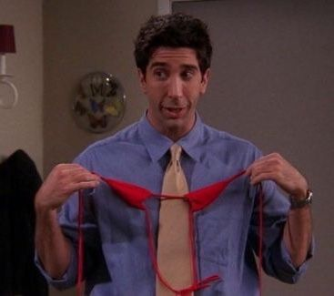 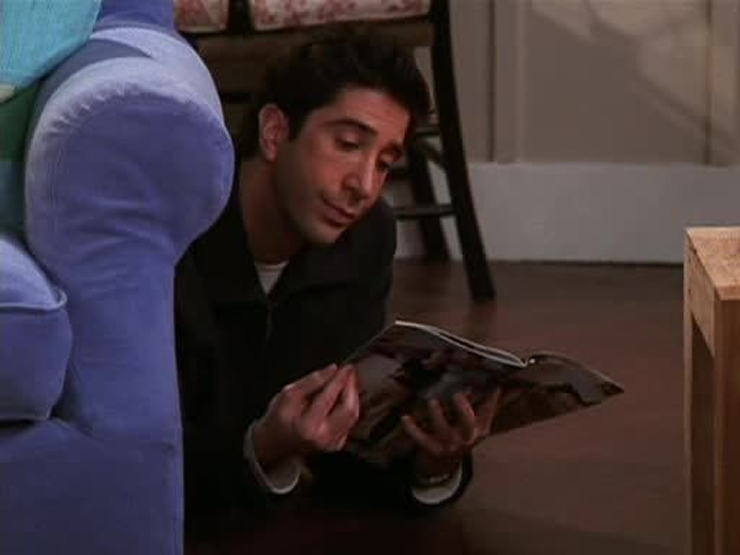
In the end, Ross Geller is the lovable disaster we can’t help rooting for — brilliant, emotional, and forever trying to get it right. His story doesn’t end here; his passion for love, science, and second chances keeps him moving. Breaks, dinosaurs, divorces and all… Ross always finds his way back.